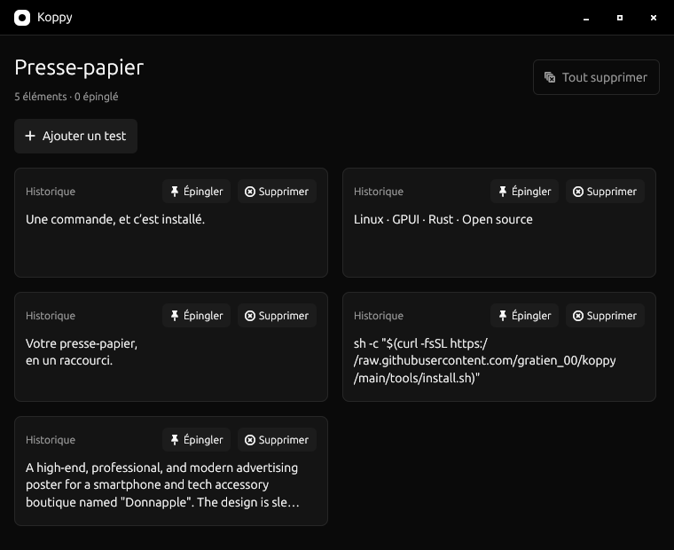
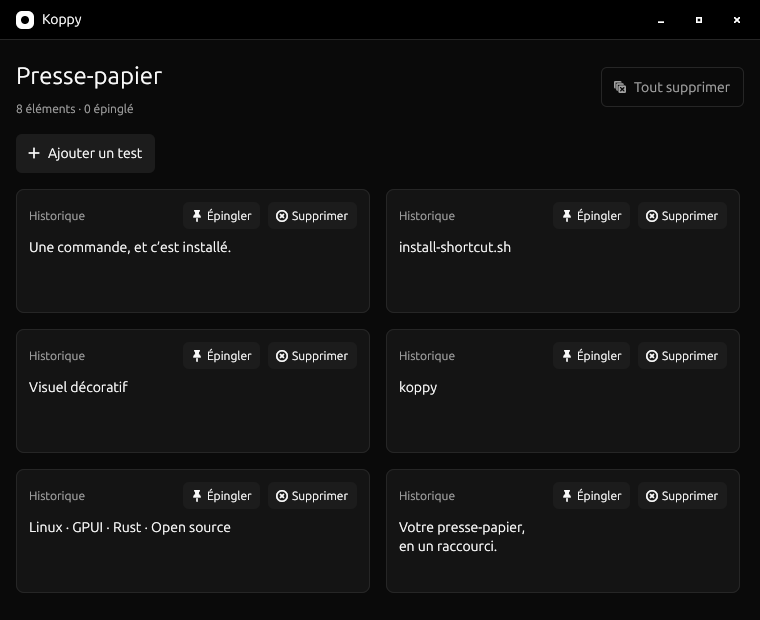
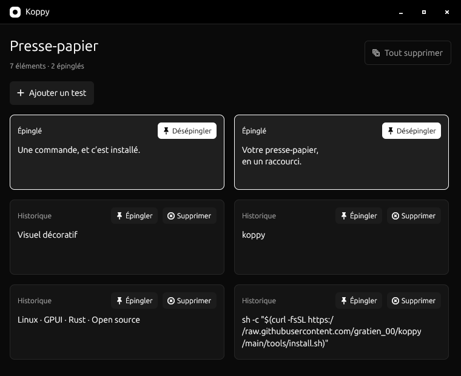
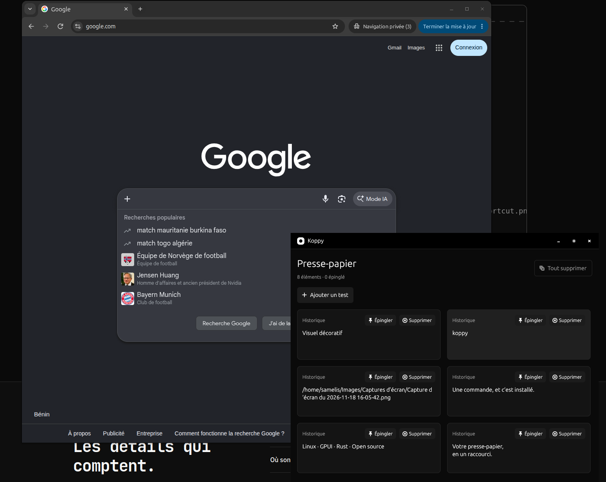

Historique automatique
Les 30 derniers textes copiés sont enregistrés. Un texte recopié remonte en tête au lieu d’être dupliqué.
Linux · GPUI · Rust · Open source
Koppy garde l’historique de tout ce que vous copiez, vous laisse épingler l’essentiel et recolle votre sélection en un clic. Une petite fenêtre, zéro friction.
Raccourci global Shift+Super+V

Le script récupère la dernière release GitHub, vérifie son empreinte SHA-256, puis installe le binaire, l’icône du dock, le lanceur et le raccourci clavier.
sh -c "$(curl -fsSL https://raw.githubusercontent.com/littlebot12/koppy/main/tools/install.sh)"
Téléchargez l’archive de la dernière release :
curl -fL -o koppy.tar.gz https://github.com/littlebot12/koppy/releases/latest/download/koppy-linux-x86_64.tar.gz
Extrayez puis lancez le script fourni :
mkdir koppy && tar -xzf koppy.tar.gz -C koppy && cd koppy && ./install-shortcut.sh
Le binaire est compilé sur Ubuntu 24.04 (glibc 2.39) : une distribution équivalente ou plus récente est nécessaire.
Koppy travaille en arrière-plan et n’apparaît que lorsque vous en avez besoin.
Les 30 derniers textes copiés sont enregistrés. Un texte recopié remonte en tête au lieu d’être dupliqué.
Gardez vos snippets précieux au-dessus de la liste. Ils survivent au « Tout supprimer » et aux redémarrages.
Shift + Super + V affiche la fenêtre centrée, y compris sous GNOME Wayland.
Choisir une carte recopie son texte puis ferme immédiatement la fenêtre. Il ne reste qu’à coller avec Ctrl + V.
L’application est monochrome et s’adapte automatiquement au mode clair ou sombre du système.
Icône propre dans le dock, lanceur système, icônes SVG natives pour toutes les actions de la barre de titre.
Quelques vues de l’application en thème sombre. Cliquez sur une capture pour l’agrandir.



Oui. Wayland interdit les raccourcis globaux captés par les applications, donc le script enregistre un raccourci personnalisé dans GNOME qui exécute koppy --activate. Sous X11, Koppy tente aussi un grab direct.
Dans ~/.local/share/koppy/clipboard_history.json. Aucun texte ne quitte votre machine.
Le script rafraîchit les caches d’icônes et du desktop. Sous GNOME Wayland, une déconnexion puis une reconnexion suffisent généralement à afficher le lanceur.
Préfixez la commande d’installation avec KOPPY_VERSION=v0.1.0. La version latest est utilisée par défaut.